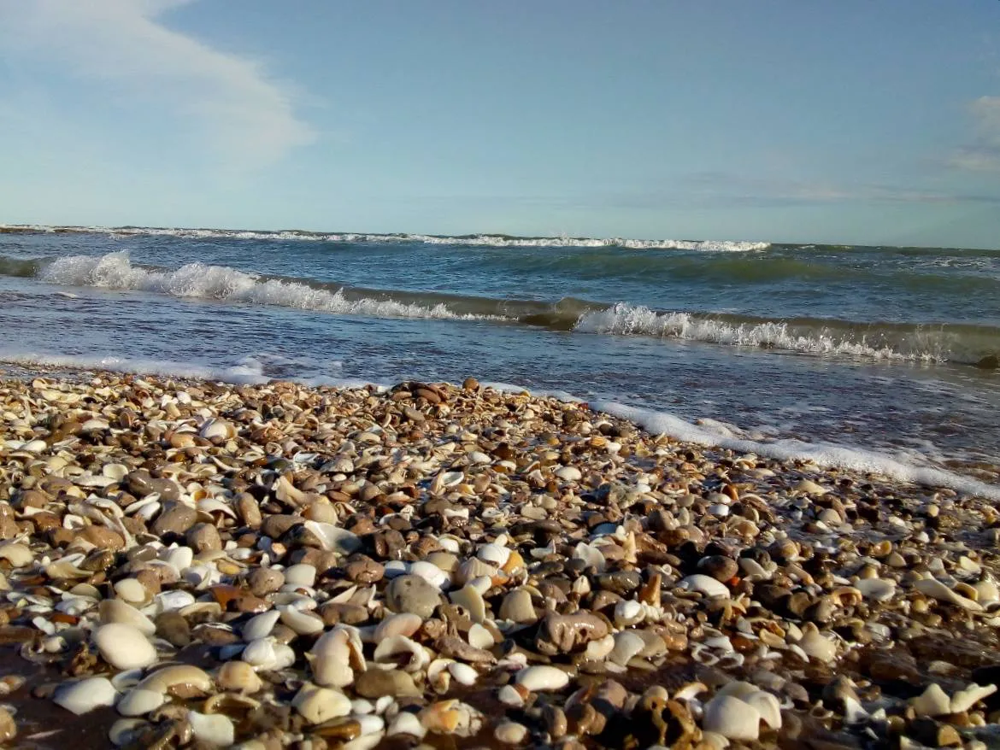
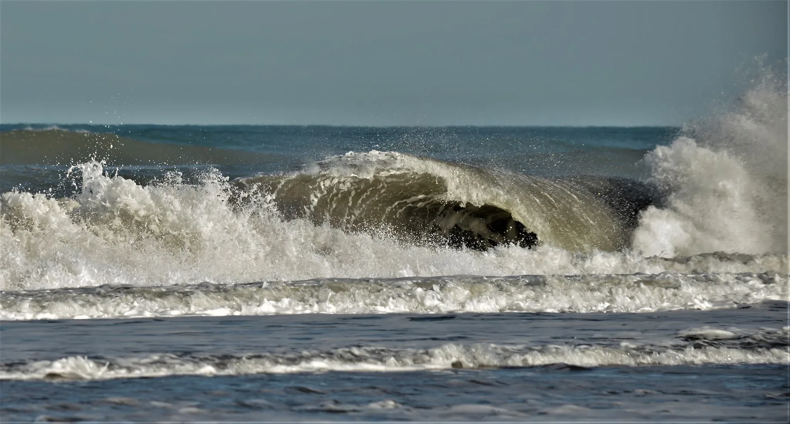
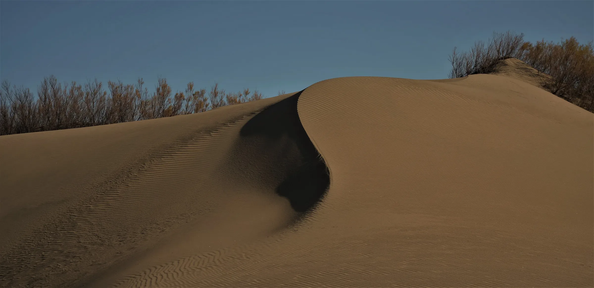
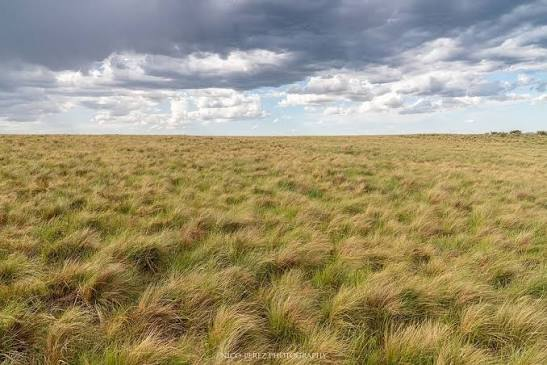
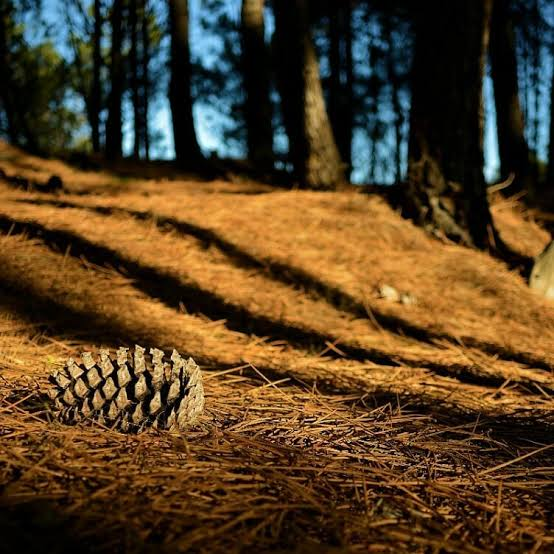
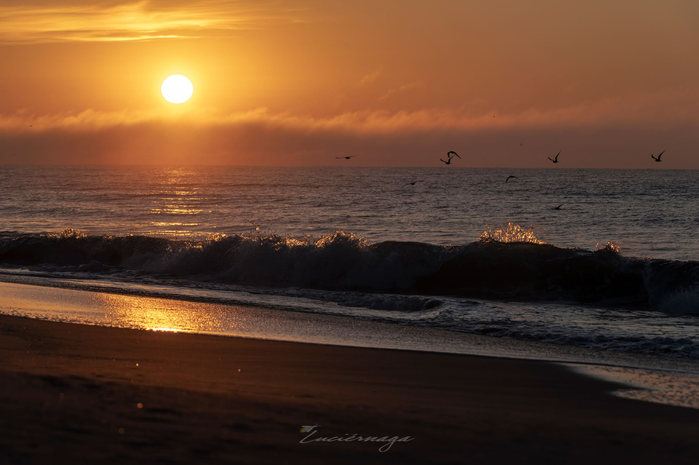

No encontramos ambientes que coincidan con tu búsqueda.
Ambientes disponibles

Albúfera
El mar y el río convergen en un ecosistema único.
Una laguna próxima a la costa, formada por agua salada y dulce, separada del mar por una lengua de arena de playa, es una rareza natural como hay pocas en el planeta.
Leer más
Caracolero
Conocé el Caracolero de Reta.
Esta ficha incorporará información documentada del Caracolero.
Leer más
Mar
El ambiente marino de Reta.
La descripción de este ambiente se completará con información documentada sobre el mar de Reta.
Leer más
Médanos
Un resguardo ante los fuertes vientos.
Sus arenas y plantas adaptadas contribuyen a la dinámica costera y ofrecen refugio a numerosas especies.
Leer más
Pastizal
Descripción del Pastizal en preparación.
En esta ficha se reunirán datos documentados para describir el Pastizal.
Leer más
Pinar
Pronto habrá más información sobre el Pinar de Reta.
El contenido de esta ficha se ampliará cuando haya datos documentados sobre el lugar.
Leer más
Playa
La extensa orilla del océano Atlántico.
Un ambiente dinámico donde las mareas, el viento y la arena modelan el paisaje y sostienen distintas formas de vida.
Leer más
Río
Conocé el Río y sus destinos relacionados.
Explorá la Desembocadura del Río Quequén Salado, la Cueva del Tigre y la Cascada Cifuentes.
Leer más